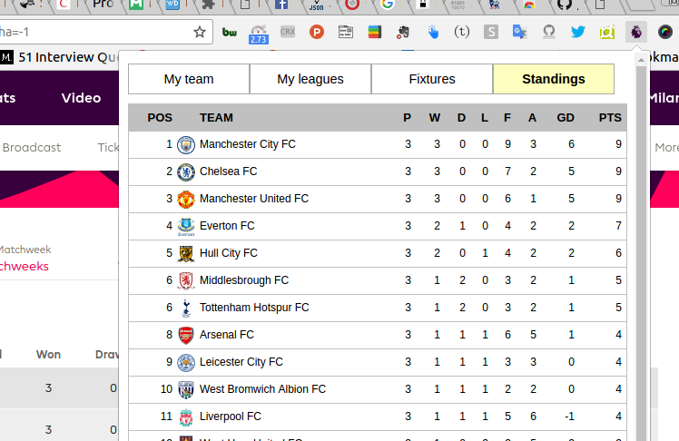

What is EPL Fantasy?
It is a Chrome browser extension that would help you track and check your fantasy team points, ranks, dream team, leagues that you are part of, league positions, upcoming matches and EPL standings.
Do I need it?
Do you play EPL fantasy? Do you often find yourself in situation, that to check just scores, you need to login, load entire pages, click on tabs, etc.? Do you think that there should be one-click option to check your fantasy team stats? If you answered yes to these questions, than you have come at the correct place. This extension is designed to cut down on that wasted time and give you birds-eye view of your team stats, ranking, points, upcoming matches, etc.
How does it work?
EPL fantasy uses the open-link that it provides, as an API. You can read more about it here and here. Once you install this extension, it would look something like this:

How do I get it?
EPL fantasy is available in the Chrome Web Store or click Add to Chrome to install the extension.